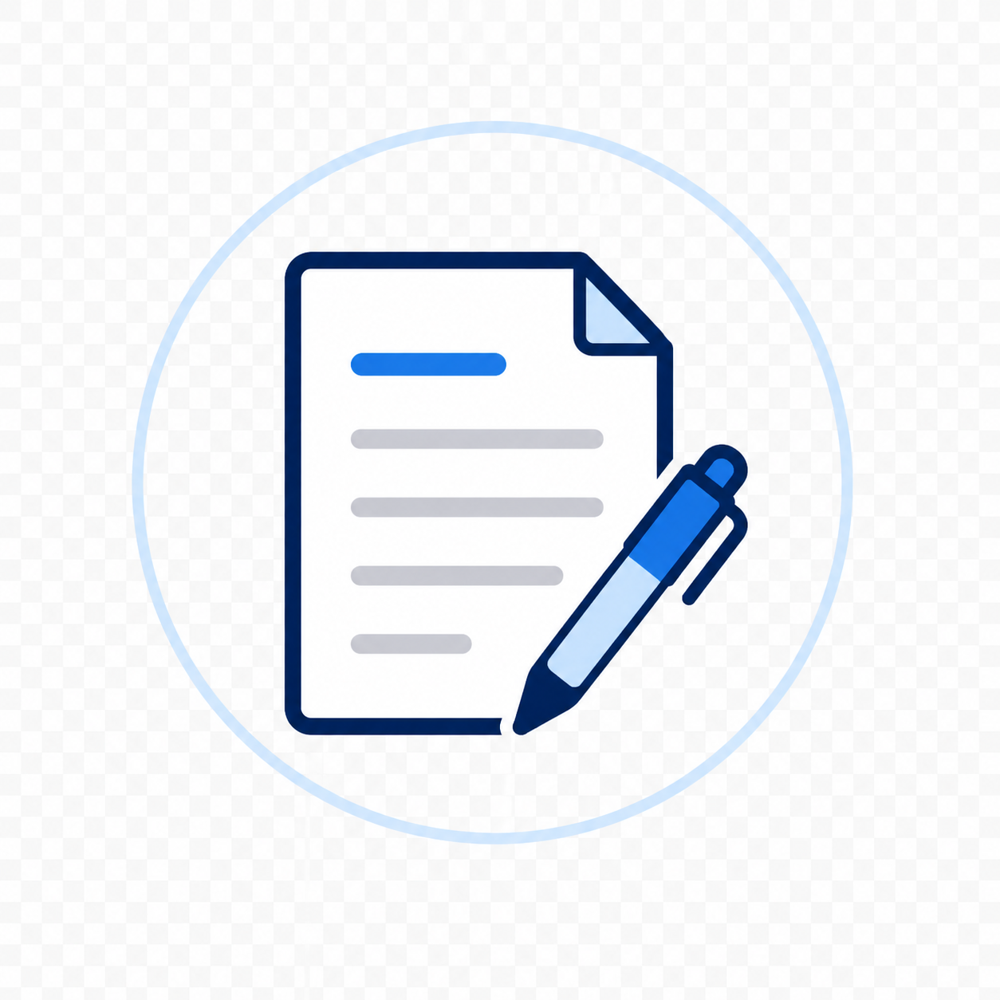
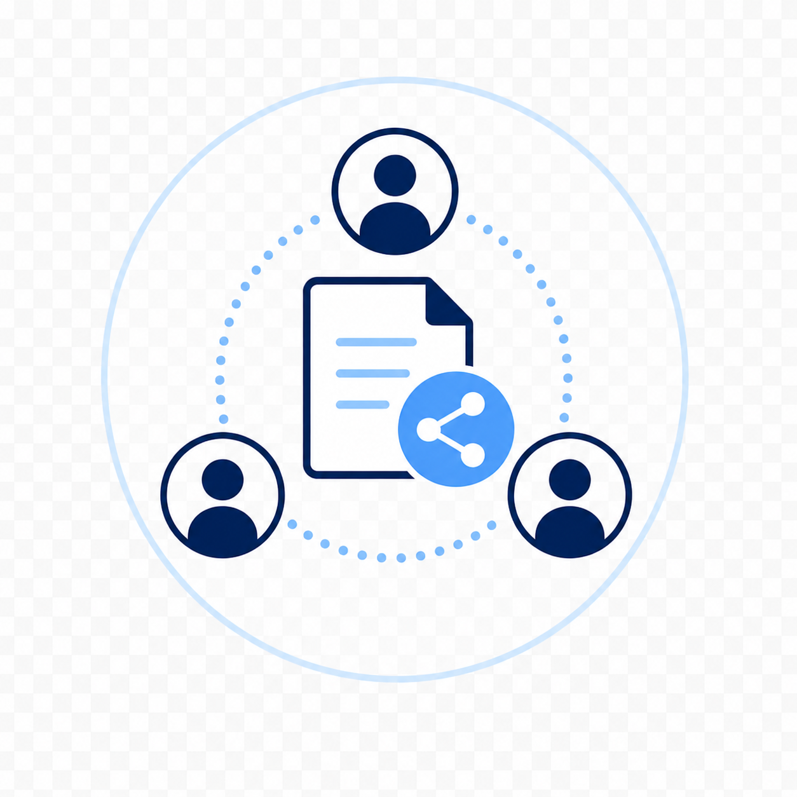
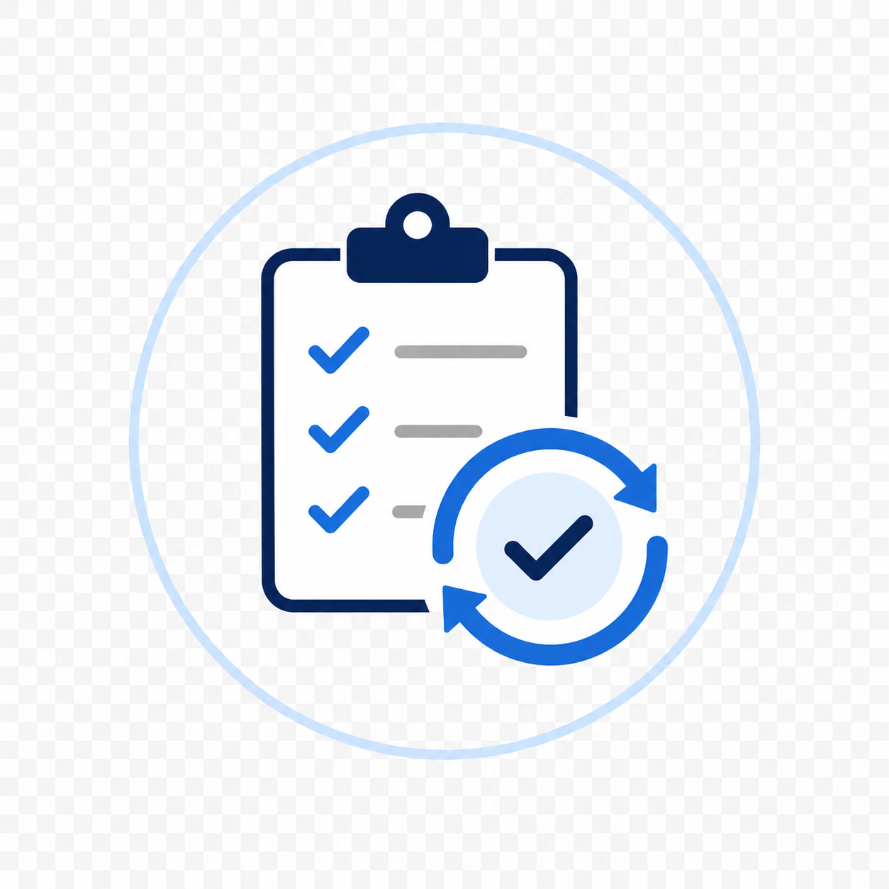
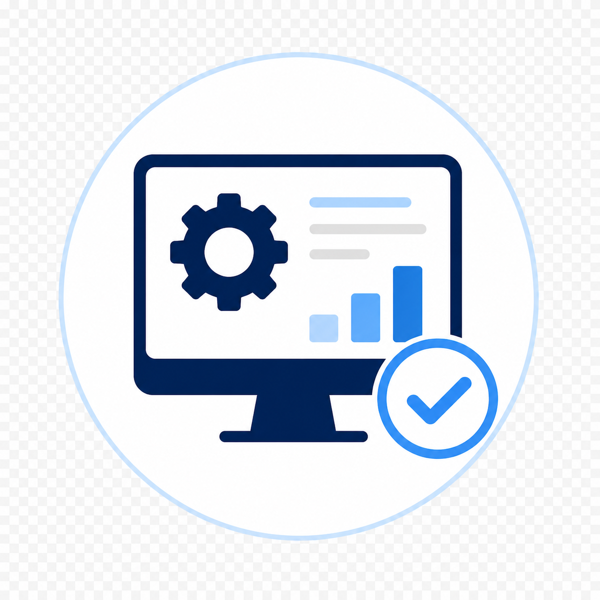

1）整理する
業務診断
対象業務の流れや課題を整理し、どこから改善に取り組むべきか、進め方の方向性を明確にします。
サービス内容
AI・ITツールありきではなく、現在の業務を起点に、1つの業務から改善しやすい形を検討します。
1）整理する
対象業務の流れや課題を整理し、どこから改善に取り組むべきか、進め方の方向性を明確にします。
2）整える
AI・ITツールの導入・活用方法や業務の流れ、確認手順、運用ルールなどを実務に合わせて整えます。
3）続ける
導入後の運用状況を確認しながら、対象業務の改善を継続します。必要に応じて、他の業務への展開を支援します。
AIは下書き・整理・たたき台作成を支援するものとして活用し、最終確認・判断は人が行いやすい形に整えます。

報告書や社内文書などの下書き作成、確認手順の整理。
複数の資料やメモを扱いやすくまとめ、確認しやすくする流れづくり。

担当者間での共有手順を整理し、伝達漏れを減らす進め方の検討。
回答案の準備や確認方法をそろえ、対応の負担を削減する取り組み。

繰り返し作業の手順を整理し、より効率的な形に整える支援。

勤怠・申請等に関連するITツールの導入や運用整理についても、必要に応じて支援します。
現在の業務状況を確認し、見直しやすい作業やAI・ITツールを活用できそうな場面を一緒に整理します。